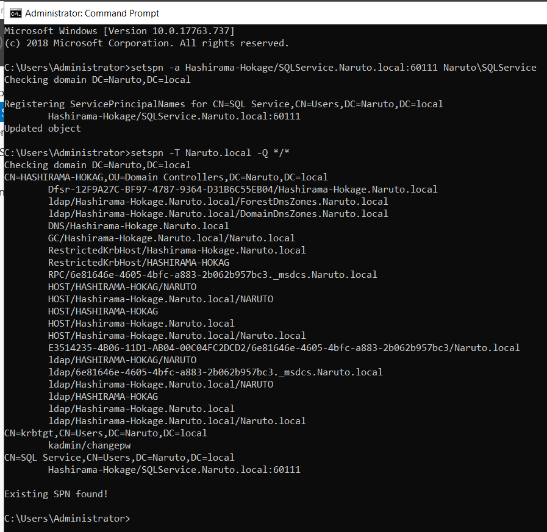

Password1

Password2019!@#

Password2

MYpassword123#
Setting Users (i.e.2 Admin User (i.e. Goku and SQL ) and 2 domain User (i.e. Vegeta and luffy))
Tools -> Active Directory Users and Computers
Naruto.local -> Organizational Unit named Groups -> Drag/Copy all the users From Users folder into Groups.
SQL Service Account should not be administrative account but in the 70% of the cases SQL service account is the administrative account.
Lot of Domain Adminstrator use to keep their password in the Description Cuz they think only they can read it.
Setting File sharing :
Share -> Task Share -> SMB share quick
Why are doing it Cuz most domain controller's have file share's (i.e. We have to have open Port 139 and 445)
so that we have SMB enabled on this Domain Controller.
Open Command Prompt with Admin right and we are going to make SPN (i.e. Service Principal Name)
We are setting an attack for kerberoasting
setspn -a Hydra-DC/SQLService.MARVEL.local:60111 MARVEL\SQLService
setspn -a Hashirama-Hokage/SQLService.Naruto.local:60111 Naruto\SQLService
setspn -T MARVEL.local -Q */*
setspn -T Naruto.local -Q */*

Group Policy Management (i.e. Open with admin rights)
- Create a GPO in this domain (i.e. Disable windows defender)

Click on disable windows defender and click on edit